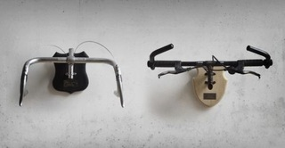
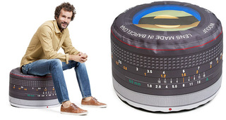
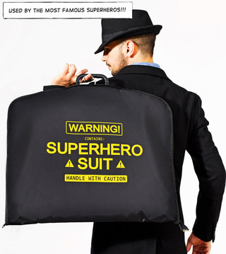
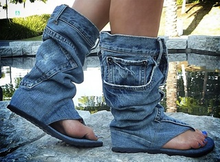

Mon, 19 Nov 2012 08:19:46 +0000
Taxidermia ciclista
Taxidermia ciclista
El servicio de Taxidermia Ciclista está concebido tanto para aquellos que quieran rendir homenaje a su bicicleta a la hora de jubilarla como para los cazadores de bicicletas que quieran adornar su salón con trofeos de los que presumir. En Continue reading.

El servicio de Taxidermia Ciclista está concebido tanto para aquellos que quieran rendir homenaje a su bicicleta a la hora de jubilarla como para los cazadores de bicicletas que quieran adornar su salón con trofeos de los que presumir.
En el segundo caso, decir que probablemente la cabeza de un arce imponga más y, en materia de posesiones espirituales, una cabeza de arce hablando y vomitando desde la pared tiene más actitud que el manillar de una bicicleta (aunque el sonido del cambio de marchas por la madrugada puede ser exasperante, la verdad).
El precio del servicio empieza en los 40 euros y aumenta dependiendo de la pieza, del tipo de manada a la que pertenezca y de la inscripción que queramos marcar en la placa. Sería interesante colocar un trofeo pequeño a su lado con la cadena y el candado, que una bicicleta es la tentación pura incluso en casa.
Visto en Neatorama
Ver más: bicicletas, trofeos
Seguir @NoPuedoCreer - @QueLoVendan
Fri, 16 Nov 2012 18:46:19 +0000
Baby Mop: colaborando en casa desde la infancia
Baby Mop: colaborando en casa desde la infancia
Dicen que el momento en el que el hijo empieza a caminar es uno de los más felices para los padres y uno de los más tristes para el mobiliario hogareño. Gracias al Baby Mop conseguiremos que también sea un Continue reading.

 Dicen que el momento en el que el hijo empieza a caminar es uno de los más felices para los padres y uno de los más tristes para el mobiliario hogareño. Gracias al Baby Mop conseguiremos que también sea un día triste para los padres, que tendrán que volver a coger la escoba. A no ser que hayan sido previsores y tengan otro niño-escoba en camino, claro.
Dicen que el momento en el que el hijo empieza a caminar es uno de los más felices para los padres y uno de los más tristes para el mobiliario hogareño. Gracias al Baby Mop conseguiremos que también sea un día triste para los padres, que tendrán que volver a coger la escoba. A no ser que hayan sido previsores y tengan otro niño-escoba en camino, claro.
Lo sé, hay un error de base: no tiene ninguna forma de agarrar el cepillo para controlarlo. Un palo de escoba bien ajustado a la espalda puede servir, pero de todas formas el bebé se meterá por los sitios más sucios de la casa. Lo lleva en los genes; el llamado instinto de suciedad es la forma que tiene el bebé de expresar su rebeldía revolucionaria escandalizando a sus padres. Tristemente, cuando crezca se verá obligado a transformarlo en el instinto de libertad de Bakunin, ya que llenarse de pelusas es algo sin duda sugestivo pero no sirve de mucho a la hora de pretender un cambio social o una lucha de clases verdadera.
Visto en Book of Joe
Ver más: bebés, disfraces, higiene
Seguir @NoPuedoCreer - @QueLoVendan
Fri, 16 Nov 2012 12:44:22 +0000
Puff para fotógrafos
Puff para fotógrafos
Si eres aficionado a la fotografía te gustará sentar tus posaderas en este original puff. Reproduce con fidelidad la forma (no el tamaño) de las típicas lentes de cámara reflex, con todos esos numeritos que resultan incomprensibles para el resto Continue reading.

Si eres aficionado a la fotografía te gustará sentar tus posaderas en este original puff. Reproduce con fidelidad la forma (no el tamaño) de las típicas lentes de cámara reflex, con todos esos numeritos que resultan incomprensibles para el resto de los humanos.
El Puf Lens mide 60 x 40 cm. y está relleno de “Microperlas” EPS, lo que quiere decir que es blandito. Ideal para tomarse un café cómodamente en una de las ya típicas tazas objetivo de cámara.

Ver más: cámaras de fotos, fotógrafos, puf, puff
Seguir @NoPuedoCreer - @QueLoVendan
 QueLoVendan
QueLoVendan La tienda de regalos y gadgets divertidos - Cupón dto. 5% ->
SOY_FAN_DE_NPC
Tue, 13 Nov 2012 12:23:41 +0000
Portatrajes para Superhéroes
Portatrajes para Superhéroes
Hay muchos tipos de Superhéroes; la mayoría tienen la misión de aniquilar físicamente a los villanos que amenazan al planeta, pero algunos tienen otros objetivos más... prosaicos. Generalmente, los superhéroes cuyos superpoderes son ideales para salvar a la humanidad y Continue reading.

Hay muchos tipos de Superhéroes; la mayoría tienen la misión de aniquilar físicamente a los villanos que amenazan al planeta, pero algunos tienen otros objetivos más... prosaicos.
Generalmente, los superhéroes cuyos superpoderes son ideales para salvar a la humanidad y cosas así, no tienen problemas con el mantenimiento de su ajuar. Sus trajes están siempre impecables de forma milagrosa. Al menos yo no he visto en ningún cómic ni película uno de sus trajes puestos a secar en el patio de luces o en la azotea de su casa.
Los más sufridos son los que tienen poderes más vulgares, como la capacidad de aguantar sin dormirse el ataque de tediosos informes y terroríficos PowerPoints. Los trajes de estos superhéroes de garrafón necesitan cuidados especiales, hay que llevarlos a la tintorería regularmente y, cuando viajan, han de ir correctamente protegidos.
Ahí es donde entra en escena el Super Suit Carrier, un Portatrajes para esos Superhéroes cuya misión principal es sobrevivir diariamente a la jungla de cristal.
Seguro que conoces a alguien que necesita uno.
Ver más: portatrajes, superhéroes, trajes
Seguir @NoPuedoCreer - @QueLoVendan
Mon, 12 Nov 2012 15:51:51 +0000
Los pantalones por los tobillos, ahora sin implicaciones sexuales
Los pantalones por los tobillos, ahora sin implicaciones sexuales
Algunos barrios es mejor cruzarlos con el dinero guardado en el calcetín; son territorios de mafias, maleantes y bancos con tentadores juegos de sartenes. Pero está claro que el dinero no es lo único de valor que pueden robarnos; también Continue reading.

Algunos barrios es mejor cruzarlos con el dinero guardado en el calcetín; son territorios de mafias, maleantes y bancos con tentadores juegos de sartenes.
Pero está claro que el dinero no es lo único de valor que pueden robarnos; también están el móvil, la tablet, el llavero-linterna, el mechero-linterna, la linterna, el condón de 2007, el sobre de azúcar por si hay un apocalipsis zombi y nos faltan nutrientes, el anillo único, la caja de cerillas-linterna, el DNI de un amigo, la tarjeta sanitaria del mismo amigo, el paquete de tabaco, la tarjeta de crédito del amigo de antes y la última fotografía de fotomatón que sobrevivió a la reunión de amigos de la infancia en la que sólo aparece un grupo de desconocidos.
Así que tener unas sandalias con bolsillos no es una mala idea, os pongáis como os pongáis.
Visto en Like Cool
Ver más: pantalones, sandalias, vaqueros
Seguir @NoPuedoCreer - @QueLoVendan